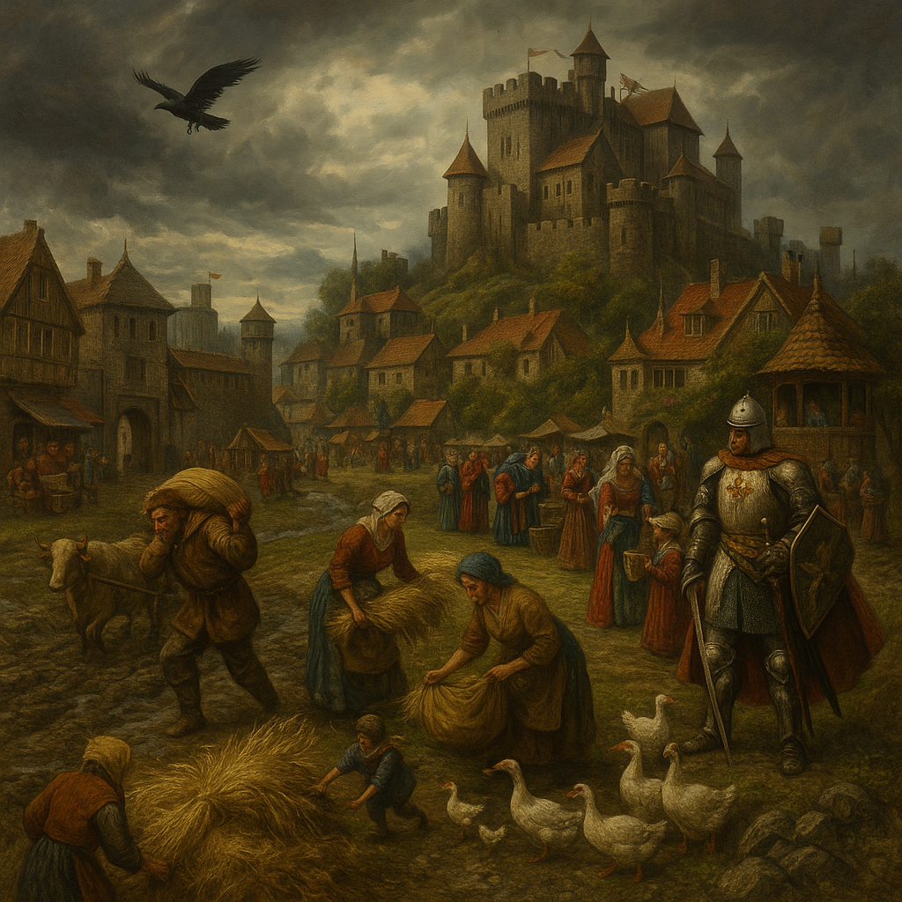

🏰
Classic Medieval
Kings, castles, betrayal, and bloodlines.
Game of Thrones showed how deep a medieval world can go—politics, war, religion, peasant life, knightly codes.
Start simple, and you’ll never run out of depth.
🏇 What Makes This World Type Unique?
- Hierarchies define everything: kings, lords, vassals, clergy, and peasants.
- Honor and betrayal coexist—alliances shift, oaths are broken.
- Magic may exist, but it's often mysterious or feared.
- The mundane (like crop yield) matters just as much as royal intrigue.
🛡️ Worldbuilding Tips
- Create a noble family tree—who rules, who plots, who’s in exile?
- Map out major cities, castles, trade roads, and battlefields.
- Include religions or belief systems that influence wars and laws.
- Add culture: feast days, duels, folk tales, and traditions.
📜 Narrative Ideas
- A kingdom on the brink—rebellion brews while foreign armies gather.
- A bastard heir with a claim to the throne must choose loyalty or ambition.
- A knight questions the order’s sacred vows after a devastating war.
- Religion and politics collide when a peasant claims divine visions.
🎮 Game Design Possibilities
- Faction and reputation systems—choices have political weight.
- Tactical combat with armor types, horses, terrain, and siege engines.
- Intrigue mechanics: spying, rumor, bribery, arranged marriage.
- Peasant-to-king progression systems or branching noble paths.